| Function | Description |
|---|---|
| tm_scale_categorical() | Categorical scale |
| tm_scale_ordinal() | Ordinal scale |
| tm_scale_discrete() | Discrete scale |
| tm_scale_rank() | Rank scale |
| tm_scale_intervals() | Intervals scale |
| tm_scale_continuous() | Continuous scale |
| tm_scale_continuous_log(), tm_scale_continuous_log2(), tm_scale_continuous_log10(), tm_scale_continuous_log1p(), tm_scale_continuous_sqrt(), tm_scale_continuous_pseudo_log() | Logarithmic scales |
| tm_scale_asis() | As-is scale |
| tm_scale_rgb() | RGB scale |
| tm_scale_bivariate() | Bivariate scale |
8 Scales
Sections 7.3, 7.4, and 7.5 showed how to set colors, sizes, and shapes for different types of spatial objects. In them, we often used the tm_scale() function to modify the appearance of the map, such as changing the color palette (col.scale and fill.scale), sizes (size.scale), or shapes (shape.scale). The tm_scale() function automatically sets the scale for the given visual variable and the data type (factor, numeric, and integer). Thus, for example, when we provide a character variable’s name to the fill argument, then the tm_scale() function automatically sets the color scale for a categorical variable, and when we provide a numeric variable’s name to the size argument, then the tm_scale() function automatically sets the size scale for a continuous variable.
However, we often want to have more control over how our spatial objects are presented on the map. For that purpose, the tm_scale() function has a set of related functions that can be used to modify and customize the used scale. Table 8.1 presents all available scale functions in tmap.
Figure 8.1 shows examples of how some of them look like when applied to the same variable.
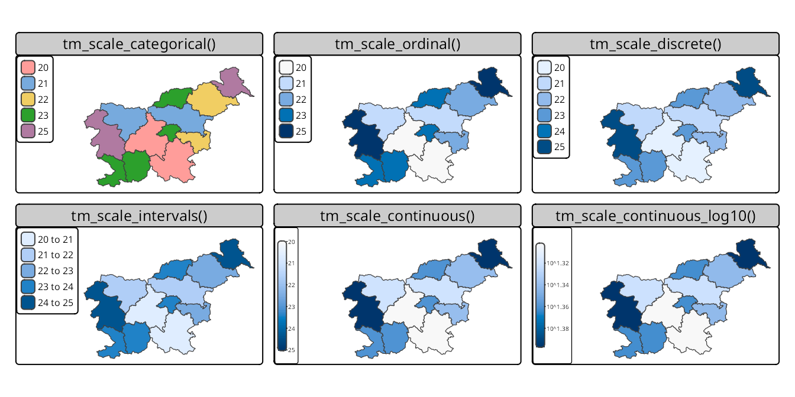
Let’s see how to use scales in the following sections – we will mostly focus on using scales for the fill.scale argument, but the same principles apply to the col.scale, size.scale, and shape.scale arguments.
8.1 Categorical scales
An example of a categorical map can be seen in Figure 8.2. We created it by providing a character variable’s name, "region_group", in the fill argument.
tm_shape(slo_regions) +
tm_polygons(fill = "region_group")
# same as:
# tm_shape(slo_regions) +
# tm_polygons(fill = "region_group", fill.scale = tm_scale_categorical())
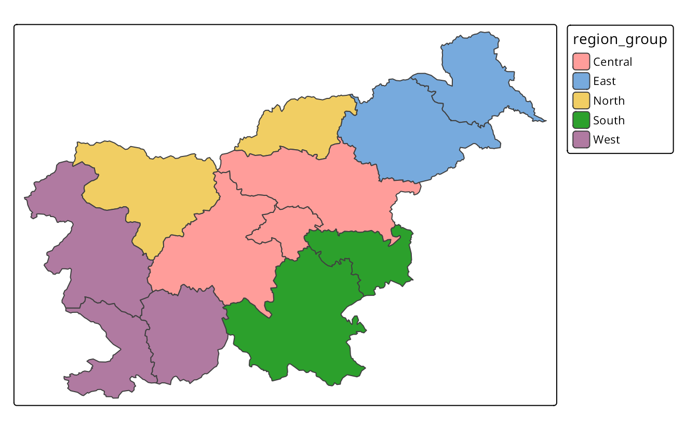
The tm_polygons(fill = "region_group", fill.scale = tm_scale_categorical()) code is run automatically in the background in this case. It is possible to change the names of legend labels with the labels argument of the tm_scale() function. As mentioned in the Section 7.3 we can also change the used color palette with the values argument.
8.2 Ordinal scales
The ordinal scale is similar to the categorical scale, but it is used for ordered categorical variables. By default, this scale uses a sequential color palette, which is suitable for ordered categorical variables Figure 8.3. We may use tm_scale_ordinal() when the order of the values matters to highlight some hierarchy or ranking.
tm_shape(slo_regions) +
tm_polygons(fill = "region_group",
fill.scale = tm_scale_ordinal())
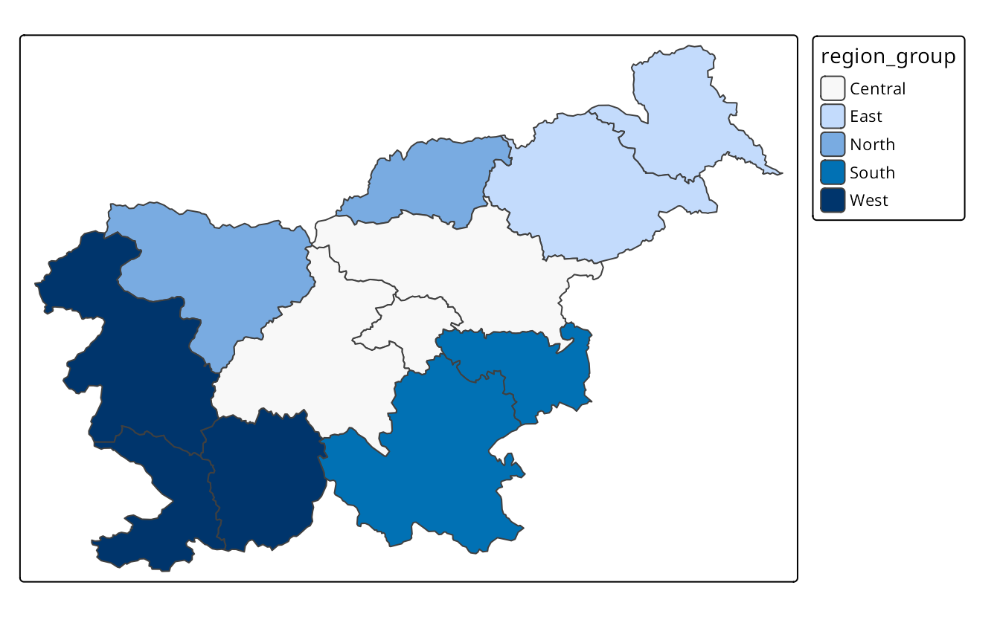
8.3 Discrete scales
tm_shape(slo_regions) +
tm_polygons(fill = "urbn_type",
fill.scale = tm_scale_discrete())8.4 Rank scales
8.5 Intervals scales
Intervals scales are used to represent continuous numerical variables using set of class intervals. In other words, values are divided into several groups based on their properties. Several approaches can be used to convert continuous variables to intervals, and each of them could result in different groups of values. Most of them use the classInt package (Bivand 2020) in the background, therefore some additional information can be found in the ?classIntervals function’s documentation.
By default, the tm_scale_intervals() function is used in the background (Figure 8.5 (a)). It uses a style called “pretty”, which creates breaks that are whole numbers and spaces them evenly 1.
tm_shape(slo_regions) +
tm_polygons(fill = "pop_dens")It is also possible to indicate the desired number of classes using the n argument of the tm_scale() function provided to the fill.scale argument. While not every n is possible depending on the input values, tmap will try to create a number of classes as close to possible to the preferred one.
The next approach is to manually select the limits of each break with the breaks argument of tm_scale() (Figure 8.5 (b)). This can be useful when we have some pre-defined breaks, or when we want to compare values between several maps. It expects threshold values for each break, therefore, if we want to have three breaks, we need to provide four thresholds. Additionally, we can add a label to each break with the labels argument.
Another approach is to create breaks automatically using one of many existing classification methods with the style argument of the tm_scale() function. Three basic methods are "equal", "sd", and "quantile" styles. Let’s consider a variable with 100 observations ranging from 0 to 10. The "equal" style divides the range of values into n equal-sized intervals. This style works well when the values change fairly continuously and do not contain any outliers. In tmap, we can specify the number of classes with the n argument or the number of classes will be computed automatically . For example, when we set n to 4, then our breaks will represent four classes ranging from 0 to 2.5, 2.5 to 5, 5 to 7.5, and 7.5 to 10. The "sd" style represents how much values of a given variable varies from its mean, with each interval having a constant width of the standard deviation. This style is used when it is vital to show how values relate to the mean. The "quantile" style creates several classes with exactly the same number of objects (e.g., spatial features), but having intervals of various lengths. This method has an advantage or not having any empty classes or classes with too few or too many values. However, the resulting intervals from the "quantile" style can often be misleading, with very different values located in the same class.
To create classes that, on the one hand, contain similar values, and on the other hand, are different from the other classes, we can use some optimization method. The most common optimization method used in cartography is the Jenks optimization method implemented at the "jenks" style (Figure 8.5 (c)).
tm_shape(slo_regions) +
tm_polygons(fill = "pop_dens",
fill.scale = tm_scale_intervals(style = "jenks"))The Fisher method (style = "fisher") has a similar role, which creates groups with maximized homogeneity (Fisher 1958). A different approach is used by the dpih style, which uses kernel density estimations to select the width of the intervals (Wand 1997). You can visit ?KernSmooth::dpih for more details.
Another group of classification methods uses existing clustering methods. It includes k-means clustering ("kmeans"), bagged clustering ("bclust"), and hierarchical clustering ("hclust").
Finally, there are a few methods created to work well for a variable with a heavy-tailed distribution, including "headtails" and "log10_pretty". The "headtails" style is an implementation of the head/tail breaks method aimed at heavily right-skewed data. In it, values of the given variable are being divided around the mean into two parts, and the process continues iteratively for the values above the mean (the head) until the head part values are no longer heavy-tailed distributed (Jiang 2013). The "log10_pretty" style uses a logarithmic base-10 transformation (Figure 8.5 (d)). In this style, each class starts with a value ten times larger than the beginning of the previous class. In other words, each following class shows us the next order of magnitude. This style allows for a better distinction between low, medium, and high values. However, maps with logarithmically transformed variables are usually less intuitive for the readers and require more attention from them.
tm_shape(slo_regions) +
tm_polygons(fill = "pop_dens",
fill.scale = tm_scale_intervals(style = "log10_pretty"))
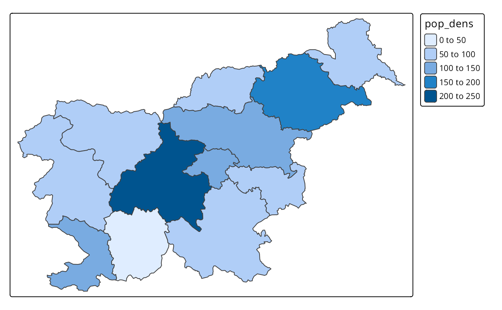
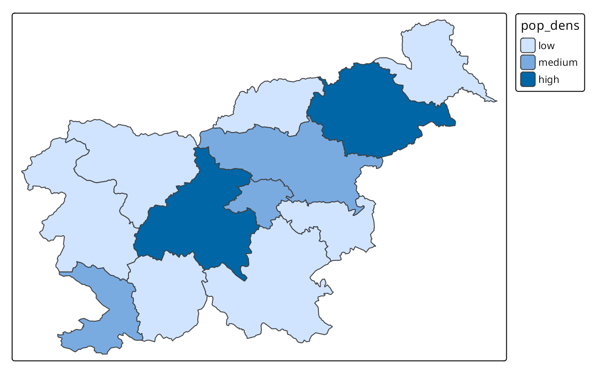
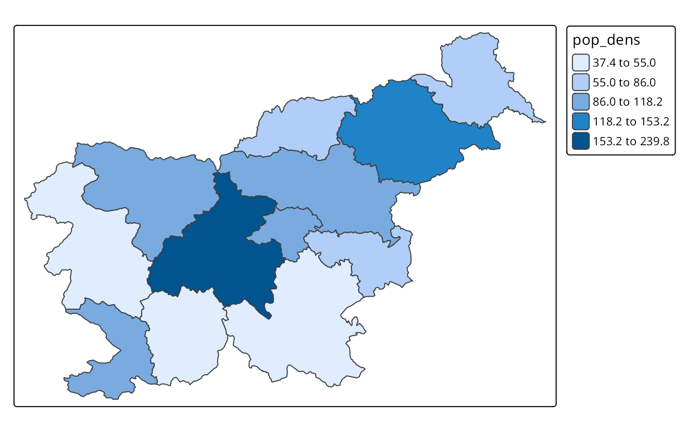
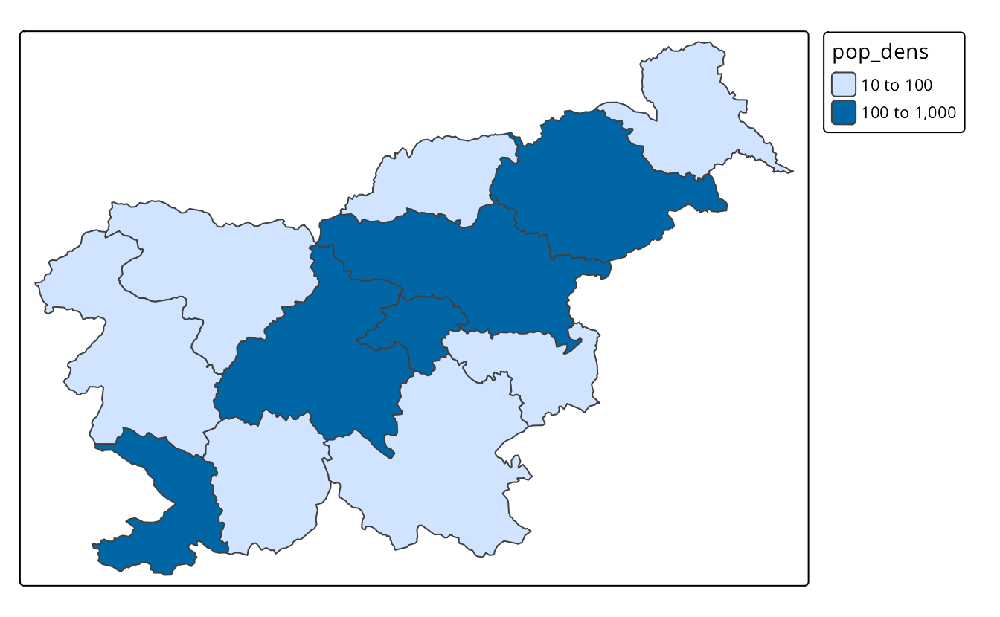
8.6 Continuous scales
Continuous maps also represent continuous numerical variables, but without any discrete class intervals (Figure 8.6). A few continuous methods exist in tmap, including tm_scale_continuous(), tm_scale_rank(), and tm_scale_continuous_log10().
The tm_scale_continuous() function creates a smooth, linear gradient. In other words, the change in values is proportionally related to the change in colors. We can see that in Figure 8.6 (a), where the value change from 50 to 100 has a similar impact on the color scale as the value change from 100 to 150. The continuous scale is similar to the pretty style, where the values also change linearly. The main difference between them is that we can see differences between, for example, values of 110 and 140 in the former, while both values have exactly the same color in the later one. The continuous scale works well in situations where there is a large number of objects in vectors or a large number of cells in rasters, and where the values change continuously (do not have many outliers).
tm_shape(slo_regions) +
tm_polygons(fill = "pop_dens",
fill.scale = tm_scale_continuous())However, when the presented variable is skewed or have some outliers, we can use either tm_scale_rank() or tm_scale_continuous_log10(). The tm_scale_rank() scale also uses a smooth gradient with a large number of colors, but the values on the legend do not change linearly (Figure 8.6 (b)). It is fairly analogous to the "quantile" style, with the values on a color scale that divides a dataset into several equal-sized groups.
tm_shape(slo_regions) +
tm_polygons(fill = "pop_dens",
fill.scale = tm_scale_rank())Finally, the tm_scale_continuous_log10() scale is the continuous equivalent of the "log10_pretty" style of tm_scale_intervals() (Figure 8.6 (c)).
tm_shape(slo_regions) +
tm_polygons(fill = "pop_dens",
fill.scale = tm_scale_continuous_log10())
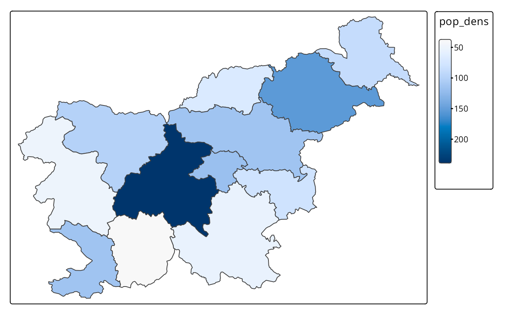
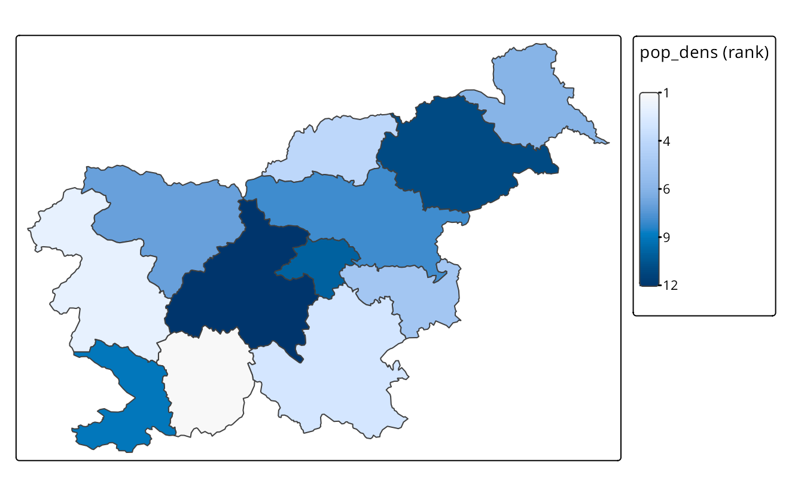
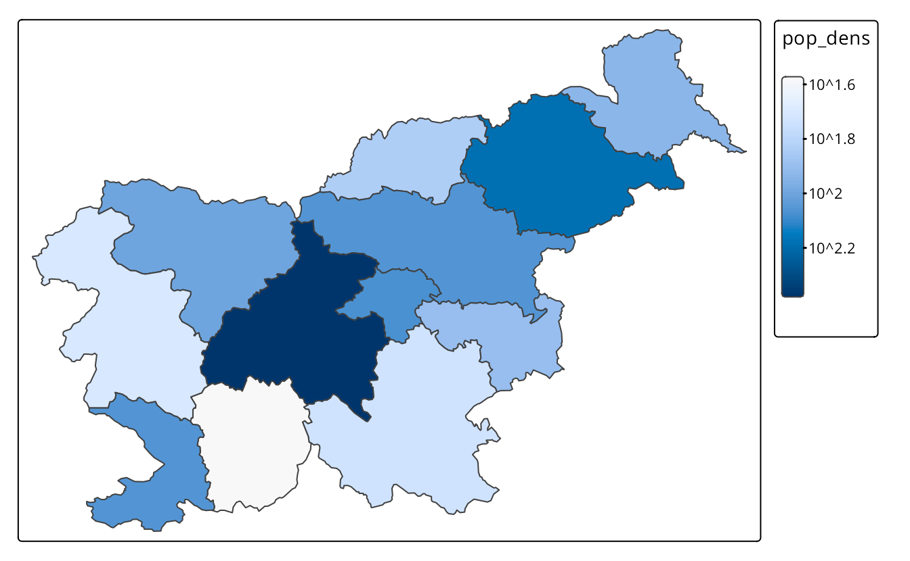
8.7 As-is scales
In most cases, we want to use a color scale based on the variable’s values. Then, tmap takes these values, groups them into classes, and assigns a color to each class. However, it is also possible to use the values of the variables directly to specify the fill color or other visual properties of the spatial objects. For example, your spatial vector data may contain a column with colors, such as "blue", "red", and "green", and then we want to use these colors directly to color the polygons. This is known as an as-is scale, and it can be used with the tm_scale_asis() function.
For example, let’s take a look at the urbn_type_col variable in the slo_regions dataset. It contains the names of the colors (in a hexadecimal format) that we want to use to color the polygons.
slo_regions$urbn_type_col
#> [1] "#994F88" "#994F88" "#994F88" "#994F88" "#994F88" "#994F88" "#994F88"
#> [8] "#994F88" "#2CA02C" "#2CA02C" "#994F88" "#2CA02C"To fill each polygon with the color specified in the urbn_type_col variable, we should specify that column with the fill argument of the tm_polygons() function and then set the fill.scale argument to tm_scale_asis() (Figure 8.7).
tm_shape(slo_regions) +
tm_polygons(fill = "urbn_type_col",
fill.scale = tm_scale_asis())
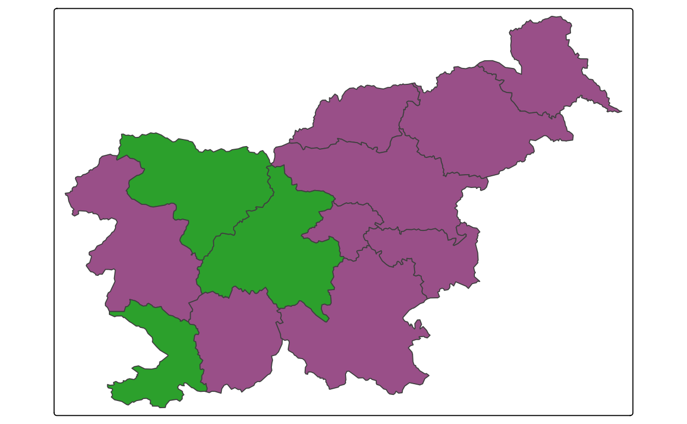
This scale does not return any legend – it is not needed, as the colors are already specified in the data.
The tm_scale_asis() function can be used not only for the fill argument, but also for the col, size, shape, and other similar arguments. In such cases, the values of the variable should be appropriate for the visual property, e.g., a set of colors for col or a set of numeric values, representing sizes, for size and, representing shapes for shape.
8.8 RGB scales
library(stars)
sat = read_stars("data/slovenia/slo_mosaic.tif")The sat object contains four bands of the Sentinel-2 image for Slovenia. The bands (blue, green, red, and near-infrared) are stored in the band dimension as B02, B03, B04, and B08. We can plot all of the bands independently or as a combination of three bands. This combination is known as a color composite image, and we can create such images with the tm_rgb() function (Figure 8.8).
Standard composite image (true color composite) uses the visible red, green, and blue bands to represent the data in natural colors. We can specify which band in sat relates to red (third band), green (second band), and blue (first band) color in tm_rgb() with the tm_vars() function.
Note
The tm_vars() function allows to specify more than one variable to be visualized at the same time. This is useful when we want to present a few variables as facets or combine multiple variables or layers to create a color composite image (tm_rgb()), a bivariate map, or an animation. It has five arguments:
-
x: variable names, variable indices, or a dimension name (forsf,stars, andSpatRasterobjects) -
dimvalues: dimension values (forstarsobjects) -
n: (if specified) the first n variables that are used -
multivariate: in case multiple variables are specified, should they serve as facets (FALSE; default) or as a multivariate visual variable? -
animate: should the variable(s) be animated?
True color images are straightforward to interpret and understand, but they make subtle differences in features challenging to recognize. However, nothing stops us from using the above tools to integrate different bands to create so called false color composites. Various band combinations emphasize some spatial characteristics, such as water, agriculture, etc., and allow us to visualize wavelengths that our eyes can not see. Figure 8.8 (b) shows a composite of near-infrared, red, and green bands, highlighting vegetation with a bright red color.

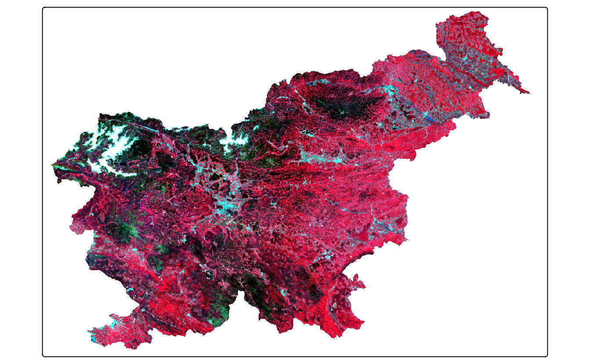
8.9 Bivariate scales
In cases when we have two variables that we want to visualize, the most common approach is to create two separate maps, one for each variable (Figure 8.9). We can do that using the tm_vars() function, which allows us to specify multiple variables (see the code below) or with the facet functions (see Chapter 16).
tm_shape(slo_regions) +
tm_polygons(fill = tm_vars(c("pop_dens", "pop65perc")),
fill.scale = tm_scale(values = "purples"))
Another approach is to create a bivariate map, where the two variables are combined into a single map. This is done by representing not only the values of each variable independently but also their interaction using a bivariate color scale. Figure 8.10 shows an example of a bivariate map, where the population density and the percentage of the population aged 65 and older are combined into a single map. Areas with a small population density and a small percentage of the population aged 65 and older are colored in gray, while areas with a high population density and a high percentage of the population aged 65 and older are colored in dark brown. Additionally, the areas with a high population density and a low percentage of the population aged 65 and older are colored in purple, while areas with a low population density and a high percentage of the population aged 65 and older are colored in gold.
The creation of bivariate maps is done with the tm_vars() function, where we specify the two variables we want to combine and set the multivariate argument to TRUE. Bivariate maps also require a special color palette, which can be specified with tm_scale_bivariate() provided to the *.scale argument. Additionally, we can modify the *.legend argument with tm_legend_bivariate(). In the case of bivariate maps, the xlab and ylab arguments are used to add labels to the x and y axes of the legend, respectively.
tm_shape(slo_regions) +
tm_polygons(fill = tm_vars(c("pop_dens", "pop65perc"), multivariate = TRUE),
fill.scale = tm_scale_bivariate(values = "purplegold"),
fill.legend = tm_legend_bivariate(xlab = "Pop. 65+ %",
ylab = "Pop. density\n(per sq. km)"))
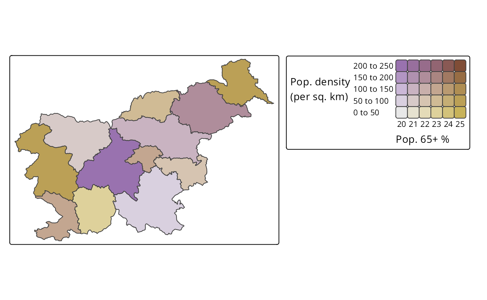
The map of a relationship between two variables can also be done for raster data, such as stars objects. Below, we read the monthly average temperature for Slovenia from a GeoTIFF file and then select only the two months of interest – January and July. Our aim is to visualize how winter and summer temperatures differ in Slovenia.
library(stars)
slo_tavg = read_stars("data/slovenia/slo_tavg.tif")
slo_tavg = slo_tavg[,,,c(1, 7)]As you can see below, the syntax to create a bivariate map using tm_vars() is the same as for vector data, except in this case, we use tm_raster() instead of tm_polygons() and provide our variables as a dimvalues argument of tm_vars() (Figure 8.11 (a)).
tm_shape(slo_tavg) +
tm_raster(col = tm_vars(dimvalues = c("tavg_1", "tavg_7"),
multivariate = TRUE))One important difference between a regular map and a bivariate map is that the latter is based on two scales – and we are able to specify them separately. Thus, all of the scales from sections 8.1 to 8.6 can be used for bivariate maps, and we can use one of them for each variable. In the example below, we use two scales for the temperature – one for the January temperatures and one for the July temperatures. In both cases, our scales are intervals, but we customize their breaks and add text labels.
tm_shape(slo_tavg) +
tm_raster(col = tm_vars(dimvalues = c("tavg_1", "tavg_7"),
multivariate = TRUE),
col.scale = tm_scale_bivariate(
values = "pinkblue",
scale1 = tm_scale_intervals(
breaks = c(-8, -4, 0, 4, 8),
labels = c("Very cold", "Cold", "Mild", "Warm")
),
scale2 = tm_scale_intervals(
breaks = c(5, 10, 15, 20, 25),
labels = c("Very cold", "Cold", "Mild", "Warm")
)
),
col.legend = tm_legend_bivariate(
xlab = "July", ylab = "January", reverse = FALSE
)
)Figure 8.11 (b) shows a customized bivariate map for the January and July temperatures in Slovenia. We may see that most of the country is characterized by mild temperatures in both months, while the cold temperatures are observed in the mountainous regions in the northwest, and the warm temperatures are observed in the southwest part of the country. There are also a few areas where the temperature category is very different between the two months, such as the northeastern part of the country, with warm July and cold January temperatures.
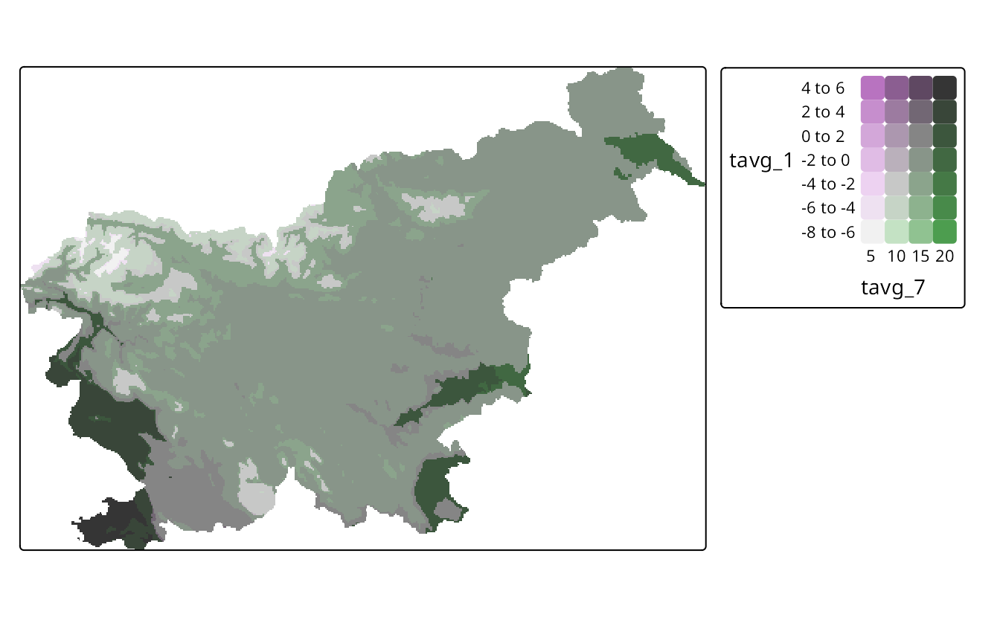
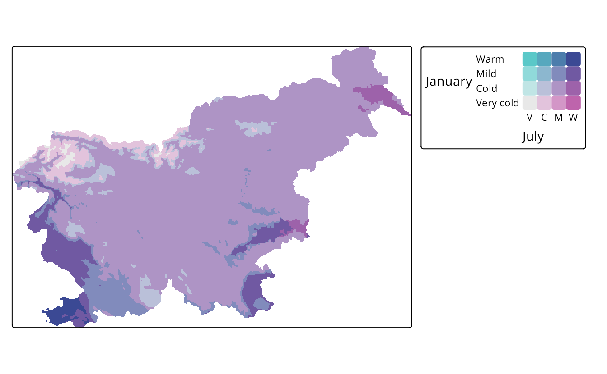
For more information visit the
?pretty()function documentation↩︎